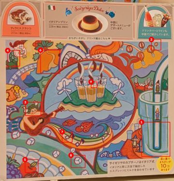

<!doctype html><html lang="ja"><meta charset="utf-8"><meta name="viewport" content="width=device-width,initial-scale=1">
<title>間違い探しを画像処理で解く</title><style>
body{font-family:system-ui,"Hiragino Sans","Noto Sans JP",sans-serif;margin:0;background:#f6f4ef;color:#222;line-height:1.6}
main{max-width:1100px;margin:auto;padding:16px} h1{font-size:1.5rem} h2{border-left:6px solid #c0392b;padding-left:8px;margin-top:2em}
a{color:#c0392b} .back{font-size:.9rem}
.summary{background:#fff;border-radius:10px;padding:12px 16px;box-shadow:0 1px 3px #0002}
table{border-collapse:collapse;width:100%;background:#fff} td,th{border-bottom:1px solid #ddd;padding:6px 8px;text-align:left}
.pair{display:flex;gap:8px;flex-wrap:wrap} .pair figure{flex:1 1 300px;margin:0} img{max-width:100%;border-radius:6px;display:block}
figcaption{font-size:.85rem;color:#666;text-align:center}
.card{background:#fff;border-radius:10px;padding:10px 14px;margin:14px 0;box-shadow:0 1px 3px #0002}
.card h3{margin:.2em 0} .n{display:inline-block;background:#c0392b;color:#fff;border-radius:50%;width:1.6em;text-align:center;margin-right:.4em}
.trio{display:flex;gap:6px;overflow-x:auto} .trio figure{margin:0;flex:0 0 auto} .trio img{height:200px;width:auto;max-width:none}
.conf{font-size:.75rem;padding:2px 8px;border-radius:10px;margin-left:.5em;vertical-align:middle}
.c強{color:#1e7b34} .c中{color:#b9770e} .c弱{color:#7f8c8d} span.c強{background:#e3f4e7} span.c中{background:#fdf2dc} span.c弱{background:#eceff0}

.grid{display:grid;grid-template-columns:repeat(auto-fill,minmax(260px,1fr));gap:14px}
.grid a{display:block;background:#fff;border-radius:10px;padding:10px;box-shadow:0 1px 3px #0002;color:inherit;text-decoration:none}
.grid h3{margin:.4em 0 .1em;font-size:1rem} .grid p{margin:0;font-size:.85rem;color:#666}
</style><main>
<h1>間違い探しを画像処理で解く</h1>
<p>2枚の絵を特徴点マッチングで重ね合わせて色の差分をとり、間違いを探した記録です。</p>
<div class="grid"><a href="2026-10-saizeriya-drink/"><h3>サイゼリヤ間違い探し（ドリンク編）</h3><p>2026-10-23 ・ 10個中9個を検出</p></a></div>
<p class="back"><a href="https://github.com/yubiquita/spot-diff">ソースコード</a></p>
</main></html>